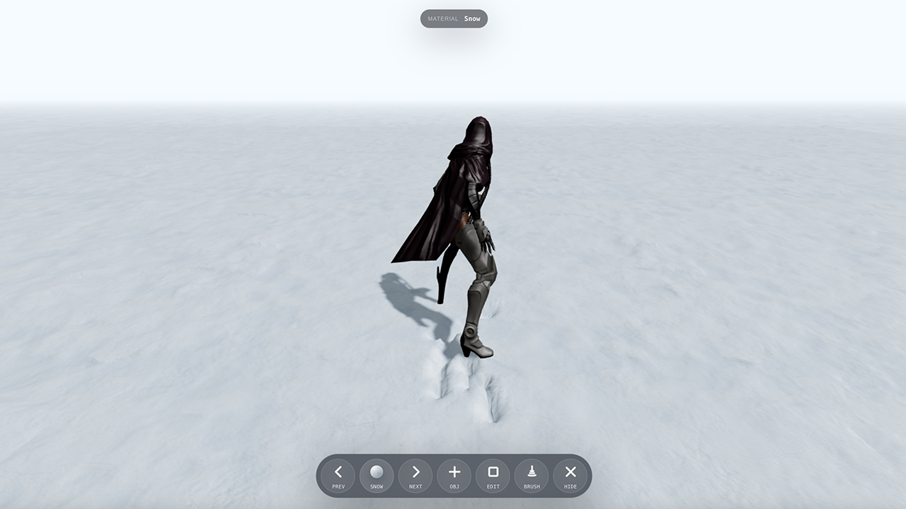
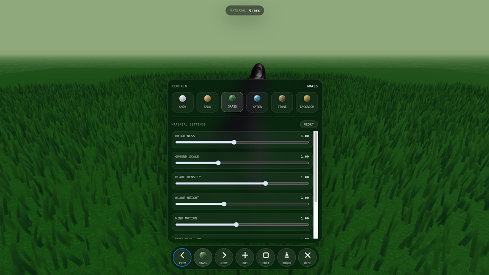
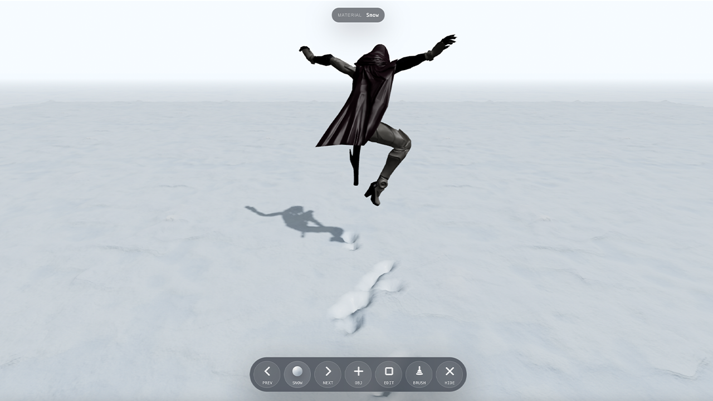
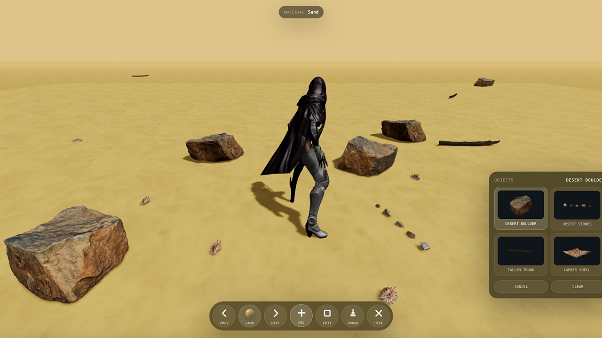
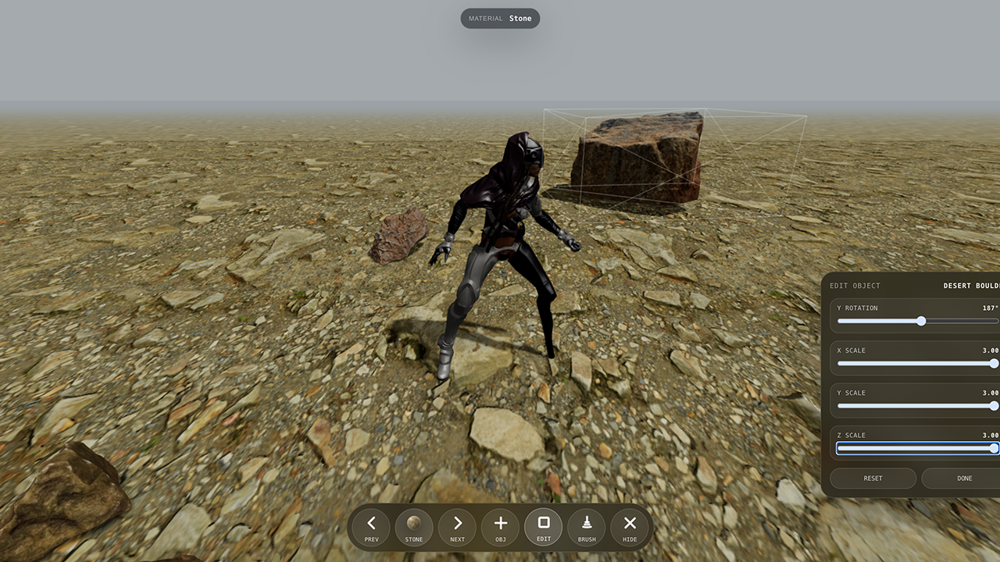
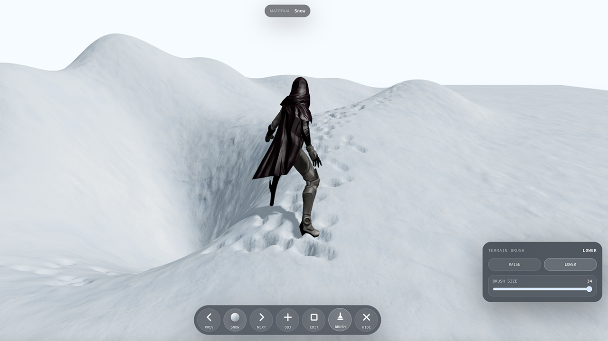

Dynamic Terrain Simulation
动态地形仿真系统
这是一个基于 Three.js 的实时 3D 场景原型，核心目标是让角色、地形、材质、物件和环境反馈形成一个连续的仿真体验。 玩家可以在不同环境中移动、跳跃、编辑地形、放置物件，并观察脚印、草、水、影子和远景之间的动态关系。

多环境材质系统
底部材质球用于切换不同环境。每个环境不是只替换颜色，而是拥有独立的材质参数、远景色调、地表反馈和交互规则。 例如雪地和沙地会留下脚印，草地会产生风动和经过形变，水面会有流动、涟漪与反射，Backroom 则是室内迷宫式空间。
- 材质选择保留完整名称，便于快速理解当前地表类型。
- 不同地图拥有独立坐标和独立物件，不会把一个场景的编辑内容带到另一个场景。
- 草地会在角色经过位置产生避让形变，并随风摆动、逐渐复原。
- 水面会根据脚步触发涟漪，水中倒影会受到波纹影响。
- 雪地和沙地脚印会结合当前地形高度，而不是固定压到原始平面。
- Backroom 场景使用独立的墙体、柱体、天花灯、碰撞和迷宫生成逻辑。
- 远景地面随角色位置持续扩展，避免开放场景突然中断。

角色运动与地面反馈
角色使用骨骼动画模型，支持站立、行走、奔跑、转向、跳跃、跑跳、后跳和坐下等动作。 地面高度会实时采样，角色会根据雕刻后的地形进行上坡、下坡和落地贴合。
- 按住 Shift 可在不同方向奔跑，空格触发原地跳、走路跳或跑步跳。
- 连续按两次 S 触发向当前朝向后方的后跳动作。
- 接近可坐的大石头类物件时，按 X 可坐到物件上。
- 雪地和沙地会留下脚印，脚印会尽量沿当前地形坡面局部压痕。

场景物件编辑器
物件系统提供类似地图编辑器的插入方式。打开 OBJ 菜单后，可以查看当前场景专属的 3D 物件缩略预览， 再点击地面把物件放入场景。物件会保存在当前地图中，并拥有自己的碰撞体积。
- 不同场景展示不同物件，例如石头、灌木、贝壳等自然地形元素。
- 高物体会阻挡角色，低物体可以跨过。
- 放大或缩小物件后，碰撞体积会同步变化。

物件自由编辑
Edit 模式用于调整已放置的物件。选中物件后，可以控制整体大小、三轴比例和水平旋转角度。 编辑结束后会收起参考线，让场景恢复干净的浏览状态。
- 支持整体缩放和 X/Y/Z 三轴比例调节。
- 支持水平旋转，方便让物件融入地形方向。
- 编辑参数会影响视觉尺寸，也会影响角色碰撞判断。

地形雕刻 Brush
Brush 功能允许对可雕刻地形进行抬高或下压。Raise 用于生成坡面、丘陵或平台，Lower 用于挖出坑洞和低洼区域。 笔刷是圆形衰减，中间影响最强，边缘形成缓坡，连续点击可以持续累积形变。
- 支持 Raise / Lower 两种模式。
- 支持调整 Brush Size，控制雕刻范围。
- 雪地、沙地、草地、石地可雕刻；水面和 Backroom 不参与雕刻。
- 角色会根据雕刻后的高度重新计算支撑位置，尝试贴合坡面和凹凸地形。
